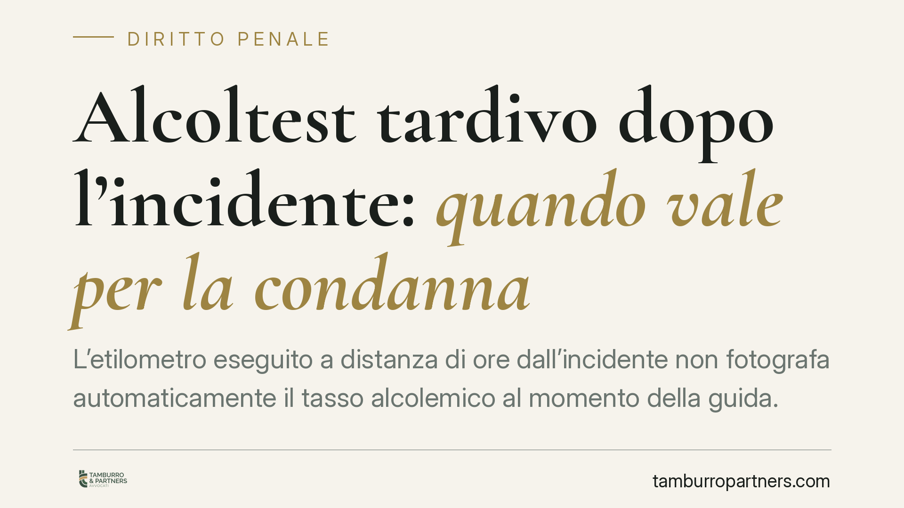

Alcoltest tardivo dopo l'incidente: quando vale per la condanna
L'etilometro eseguito a distanza di ore dall'incidente non fotografa automaticamente il tasso alcolemico al momento della guida. Una recente linea interpretativa della IV Sezione penale della Cassazione ridimensiona il valore probatorio dell'accertamento tardivo, imponendo al giudice di considerare la curva di assorbimento dell'alcol e gli eventuali sintomi di ebbrezza. Un principio che pesa sulla motivazione della condanna.

Il fatto e il principio
Quando l'alcoltest viene effettuato con forte ritardo rispetto al momento della guida, il dato numerico rilevato non può essere trasferito meccanicamente all'istante in cui il conducente era alla guida. La IV Sezione penale della Cassazione è tornata su questo punto affermando che l'accertamento etilometrico tardivo non ha valore probatorio automatico ai fini della condanna.
La ragione è fisiologica. L'alcol ingerito segue una curva di assorbimento ed eliminazione: dopo l'assunzione il tasso alcolemico sale fino a un picco, poi scende gradualmente. Un valore misurato ore dopo i fatti potrebbe quindi essere più alto o più basso di quello reale al momento della guida, a seconda della fase in cui la persona si trovava. Senza elementi che consentano una ricostruzione affidabile, il dato resta ambiguo.
*Nota: la pronuncia va riscontrata nel numero e nella data esatti prima di qualsiasi utilizzo processuale; qui se ne illustra la linea interpretativa, coerente con un orientamento già presente nella giurisprudenza di legittimità.*
Inquadramento normativo
L'art. 186 del Codice della Strada punisce la guida in stato di ebbrezza articolando la risposta sanzionatoria su tre fasce di tasso alcolemico. È essenziale distinguerle, perché non tutte hanno rilievo penale.
- Fascia 0,5–0,8 g/l (art. 186, comma 2, lett. a): costituisce illecito amministrativo, non reato. Comporta sanzione pecuniaria e sospensione della patente, ma non si traduce in una condanna penale.
- Fascia 0,8–1,5 g/l (comma 2, lett. b): reato, punito con ammenda e arresto.
- Fascia oltre 1,5 g/l (comma 2, lett. c): reato più grave, con pene e sanzioni accessorie aumentate.
La soglia penale scatta quindi oltre 0,8 g/l. Quando si parla di "condanna" per guida in stato di ebbrezza ci si riferisce alle fasce b) e c). Questo chiarimento è decisivo: un accertamento tardivo che collochi il conducente nella fascia amministrativa non apre a conseguenze penali.
Accanto all'accertamento strumentale (etilometro), la giurisprudenza riconosce la cosiddetta prova sintomatica: lo stato di ebbrezza può essere dimostrato anche attraverso indici esterni rilevati dagli operanti — alito vinoso, eloquio sconnesso, andatura incerta, occhi lucidi, comportamento alla guida. Questi elementi, se puntualmente verbalizzati, possono sorreggere la decisione anche in presenza di un dato etilometrico debole.
Implicazioni pratiche
Il principio non annulla il valore dell'alcoltest tardivo: lo ridimensiona. Il giudice che intenda fondare una condanna su un dato rilevato a distanza di tempo è gravato da un onere di motivazione rafforzato. Deve spiegare, con riferimento all'intervallo temporale trascorso e alla fase presumibile della curva alcolemica, perché quel valore sia comunque attendibile come indicatore del tasso al momento della guida.
Sul versante opposto, la difesa può contestare l'attendibilità del dato proprio facendo leva sul ritardo e sull'assenza di una ricostruzione "a ritroso" solida. Resta però un contrappeso importante: la prova sintomatica. Se gli operanti hanno annotato segni concreti di ebbrezza, la ricostruzione può reggere anche senza un valore etilometrico pienamente affidabile.
Cosa fare in concreto
- Verifica l'intervallo temporale: annota l'ora dell'incidente, l'ora del fermo e l'ora di ciascuna prova etilometrica. Lo scarto temporale è il primo elemento da esaminare.
- Richiedi il verbale completo: controlla cosa hanno scritto gli operanti sui sintomi. L'assenza di indici sintomatici è un dato difensivo; la loro presenza va valutata con attenzione.
- Controlla la taratura dell'etilometro: verifica certificazione e manutenzione dello strumento; vizi documentali incidono sull'attendibilità della misurazione.
- Valuta una consulenza tecnica: un medico legale o tossicologo può ricostruire la curva di assorbimento e stimare il tasso al momento della guida.
- Agisci tempestivamente: raccogli ogni elemento (scontrini, testimoni, orari delle assunzioni) prima che il tempo renda difficile ricostruire la vicenda.
Conclusione
L'alcoltest resta uno strumento centrale, ma non è una prova a prova chiusa. Più aumenta la distanza tra guida e misurazione, più cresce l'onere di chi vuole usarlo per condannare. Consigliamo di documentare con precisione tempi, verbali e condizioni dell'accertamento fin dalle prime fasi.
---
*Contributo informativo a cura di Tamburro & Partners — Avv. Giuseppe Tamburro. Non costituisce parere legale.*
Ogni condominio ha una storia a sé.
Se gestisci un'amministrazione e vuoi un confronto su una specifica questione condominiale, scrivi allo studio. Ti rispondiamo entro un giorno lavorativo.